기존 비교 · 넘긴 머리 앞머리 0번
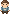
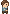

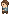
앞머리 10종과 뒷머리 10종을 같은 색으로 비교합니다. 녹색 카드는 기존 0번 스타일입니다. 앞머리를 볼 때는 뒷머리 0번, 뒷머리를 볼 때는 앞머리 0번을 사용합니다. 아이와 노년에도 게임의 같은 도트 원본을 사용하며, 모든 방향은 발 높이를 맞췄습니다.





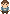
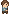
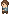
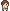
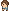
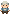
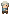

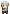
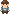
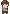
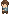
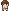
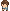
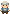


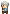
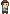
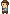
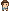
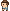
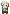

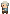
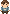
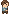
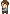
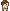
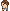
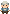
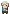

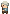
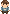
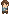
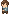
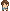
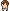
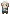

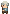
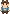
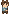
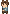
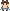
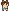
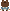
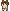
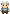
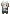
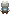
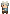